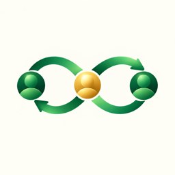

接力
· 消息转接
轻量原型 · 双向消息接力
让消息到达
该去的那个人
在网页里切换发起人、转接人、接收人，体验文字和图片如何双向接力。三种身份都在本机模拟，不会连接云端。
发起人
你
已加入
→
转接人
小林
规则已开启
→
接收人
阿哲
已同意
阿哲回复后：阿哲 → 小林 → 你
选择测试身份
本地模拟
发起人
转接人
接收人
发起人可以发文字或图片，消息会模拟经小林转给阿哲。
模拟阿哲回复 ↩
暂停这条转接
网页测试版只在当前浏览器内模拟，不连接微信或 CloudBase，图片和消息不会上传，也不会保存。它用来先体验界面与三种角色的转接流程。
9:41
你 · 转接会话
消息经小林转给阿哲
···
当前转接路径
转接中
你
→
小林
→
阿哲
三方已确认 · 文字和图片 · 本机模拟
本机演示对话
转接人管理视角
这里仅演示通道开关。前端隐藏消息不代表真实权限隔离；上线时需要由服务端控制谁能读取消息。
我
你 · 发给对方
周六徒步还按原计划吗？我看天气好像不错。
已转接 · 刚刚
哲
阿哲 · 经小林转接
按原计划！早上八点地铁口见，我把路线也整理好了。
↶
经小林转接 · 刚刚
哲
阿哲 · 经小林转接
我把路线图也发你，山顶可以看日出。
↶
经小林转接 · 刚刚
![徒步路线示意图](data:image/svg+xml,%3Csvg xmlns='http://www.w3.org/2000/svg' width='420' height='270' viewBox='0 0 420 270'%3E%3Crect width='420' height='270' rx='18' fill='%23e7f0e6'/%3E%3Cpath d='M0 45 95 25l75 29 86-23 75 31 89-14v70l-94 17-76-28-82 23-78-31L0 119Z' fill='%23d1e4ce'/%3E%3Cpath d='M0 184 85 161l68 21 82-27 72 27 113-21v109H0Z' fill='%23dce8d7'/%3E%3Cpath d='M-5 210c54-35 76-72 126-69 49 3 56 34 101 17 45-17 53-74 101-73 33 1 52 26 103 6' fill='none' stroke='%23fdfbf3' stroke-width='15' stroke-linecap='round'/%3E%3Cpath d='M-5 210c54-35 76-72 126-69 49 3 56 34 101 17 45-17 53-74 101-73 33 1 52 26 103 6' fill='none' stroke='%23c49c5a' stroke-width='3' stroke-dasharray='7 7' stroke-linecap='round'/%3E%3Ccircle cx='121' cy='141' r='10' fill='%2316845e' stroke='white' stroke-width='4'/%3E%3Cpath d='M313 68c0-13 10-23 23-23s23 10 23 23c0 17-23 39-23 39S313 85 313 68Z' fill='%23e7795d'/%3E%3Ccircle cx='336' cy='68' r='7' fill='white'/%3E%3Ctext x='24' y='38' font-family='Arial,sans-serif' font-size='16' font-weight='700' fill='%233f624c'%3E%E7%99%BD%E4%BA%91%E5%B1%B1%E5%BE%92%E6%AD%A5%E7%BA%BF%E8%B7%AF%3C/text%3E%3Ctext x='87' y='166' font-family='Arial,sans-serif' font-size='12' fill='%233f624c'%3E%E5%85%A5%E5%8F%A3%3C/text%3E%3Ctext x='341' y='126' font-family='Arial,sans-serif' font-size='12' fill='%233f624c'%3E%E5%B1%B1%E9%A1%B6%3C/text%3E%3C/svg%3E)